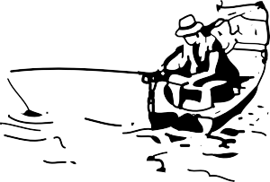

You are here: Home ‣ Dive Into HTML5 ‣
№2.
DETECTING HTML5 FEATURESYou may well ask: “How can I start using HTML5 if older browsers don’t support it?” But the question itself is misleading. HTML5 is not one big thing; it is a collection of individual features. So you can’t detect “HTML5 support,” because that doesn’t make any sense. But you can detect support for individual features, like canvas, video, or geolocation.
When your browser renders a web page, it constructs a Document Object Model (DOM), a
collection of objects that represent the HTML elements on the page. Every element — every
<p>, every <div>, every <span> — is represented in the
DOM by a different object. (There are also global objects, like window and
document, that aren’t tied to specific elements.)
All DOM objects share a set of common properties, but some objects have more than others. In browsers that support HTML5 features, certain objects will have unique properties. A quick peek at the DOM will tell you which features are supported.
There are four basic techniques for detecting whether a browser supports a particular feature. From simplest to most complex:
Check if a certain property exists on a global object (such as window or
navigator).
Example: testing for geolocation support
Create an element, then check if a certain property exists on that element.
Example: testing for canvas support
Create an element, check if a certain method exists on that element, then call the method and check the value it returns.
Create an element, set a property to a certain value, then check if the property has retained its value.
Modernizr is an open source, MIT-licensed JavaScript library
that detects support for many HTML5 & CSS3 features. You should
always use the latest version. To use it, include the following <script> element at the top
of your page.
<!DOCTYPE html>
<html>
<head>
<meta charset="utf-8">
<title>Dive Into HTML5</title>
<script src="modernizr.min.js"></script>
</head>
<body>
...
</body>
</html>
It goes to your <head>
Modernizr runs automatically. There is no modernizr_init() function to call. When it
runs, it creates a global object called Modernizr, that contains a set of Boolean properties for
each feature it can detect. For example, if your browser supports the canvas
API, the Modernizr.canvas property will be true. If your browser
does not support the canvas API, the Modernizr.canvas property will be
false.
if (Modernizr.canvas) {
// let's draw some shapes!
} else {
// no native canvas support available :(
}

Your browser supports the canvas API.
HTML5 defines the <canvas> element as “a resolution-dependent bitmap canvas that can be used for rendering graphs, game graphics, or other visual images on the fly.” A canvas is a rectangle in your page where you can use JavaScript to draw anything you want. HTML5 defines a set of functions (“the canvas API”) for drawing shapes, defining paths, creating gradients, and applying transformations.
Checking for the canvas API uses detection technique #2. If your browser
supports the canvas API, the DOM object it creates to represent a
<canvas> element will have a getContext()
method. If your browser doesn’t support the canvas API, the DOM object it
creates for a <canvas> element will only have the set of common properties, but not anything
canvas-specific.
function supports_canvas() {
return !!document.createElement('canvas').getContext;
}
This function starts by creating a dummy <canvas> element. But the element is never attached
to your page, so no one will ever see it. It’s just floating in memory, going nowhere and doing nothing, like a
canoe on a lazy river.
return !!document.createElement('canvas').getContext;As soon as you create the dummy <canvas> element, you test for the presence of a
getContext() method. This method will only exist if your browser supports the canvas
API.
return !!document.createElement('canvas').getContext;Finally, you use the double-negative trick to force the result to a Boolean value (true or
false).
return !!document.createElement('canvas').getContext;This function will detect support for most of the canvas API, including shapes, paths, gradients & patterns. It will not detect the
third-party explorercanvas library that implements the canvas
API in Microsoft Internet Explorer.
Instead of writing this function yourself, you can use Modernizr to detect support for the canvas API.
check for canvas support
if (Modernizr.canvas) {
// let's draw some shapes!
} else {
// no native canvas support available :(
}
There is a separate test for the canvas text API, which I will demonstrate next.
Microdata is a standardized way to provide additional semantics in your web pages. For example, you can use microdata to declare that a photograph is available under a specific Creative Commons license. As you’ll see in the distributed extensibility chapter, you can use microdata to mark up an “About Me” page. Browsers, browser extensions, and search engines can convert your HTML5 microdata markup into a vCard, a standard format for sharing contact information. You can also define your own microdata vocabularies.
The HTML5 microdata standard includes both HTML markup (primarily for search engines) and a set of DOM functions (primarily for browsers). There’s no harm in including microdata markup in your web pages. It’s nothing more than a few well-placed attributes, and search engines that don’t understand the microdata attributes will just ignore them. But if you need to access or manipulate microdata through the DOM, you’ll need to check whether the browser supports the microdata DOM API.
Checking for HTML5 microdata API support uses detection technique
#1. If your browser supports the HTML5 microdata API, there will be a
getItems() function on the global document object. If your browser doesn’t support
microdata, the getItems() function will be undefined.
function supports_microdata_api() {
return !!document.getItems;
}
Modernizr does not yet support checking for the microdata API, so you’ll need to use the function like the one listed above.
The HTML5 history API is a standardized way to manipulate the browser history via script. Part of this API — navigating the history — has been available in previous versions of HTML. The new part in HTML5 is a way to add entries to the browser history, and respond when those entries are removed from the stack by the user pressing the browser’s back button. This means that the URL can continue to do its job as a unique identifier for the current resource, even in script-heavy applications that don’t ever perform a full page refresh.
Checking for HTML5 history API support uses detection technique
#1. If your browser supports the HTML5 history API, there will be a
pushState() function on the global history object. If your browser doesn’t support the
history API, the pushState() function will be undefined.
function supports_history_api() {
return !!(window.history && history.pushState);
}
Instead of writing this function yourself, you can use Modernizr (1.6 or later) to detect support for the HTML5 history API.
check for history API support
if (Modernizr.history) {
// history management works!
} else {
// no history support :(
// fall back to a scripted solution like History.js
}
Specifications and standards:
<canvas> element
<video> element
<input>
types
<input placeholder> attribute
<input autofocus> attribute
JavaScript libraries:
Other articles and tutorials:
This has been “Detecting HTML5 Features.” The full table of contents has more if you’d like to keep reading.
In association with Google Press, O’Reilly is distributing this book in a variety of formats, including paper, ePub, Mobi, and DRM-free PDF. The paid edition is called “HTML5: Up & Running,” and it is available now. This chapter is included in the paid edition.
If you liked this chapter and want to show your appreciation, you can buy “HTML5: Up & Running” with this affiliate link or buy an electronic edition directly from O’Reilly. You’ll get a book, and I’ll get a buck. I do not currently accept direct donations.